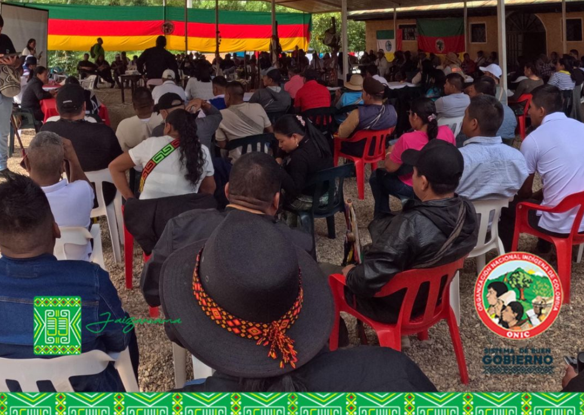

En el seno del resurgimiento del movimiento indígena Colombiano estructuramos hace 44 años la ONIC, la Consejería Secretaría General conforma el Sistema de Buen Gobierno donde se retoma el mandato 21 de la Ley de Gobierno Propio, en tanto es fundamental para orientar y dirigir efectivamente nuestras luchas por la Pervivencia.
Reconocemos el legado y el papel histórico que como pueblos originarios caminamos en las rutas trazadas en nuestros relatos de origen para defender nuestros territorios. Es así que en el seno del resurgimiento del movimiento indígena Colombiano estructuramos hace 44 años la ONIC desde el saber acumulado: en el origen del tiempo, en nuestras comunidades y organizaciones para la pervivencia de nuestros Pueblos en medio de las difíciles situaciones de conflicto armado, de racismo estructural y de colonialismo intelectual que amenaza permanente con nuestra extinción.
Es connatural a nosotros como Pueblos Originarios repensarnos, asumir los aprendizajes y redireccionar nuestra acción organizativa, prueba de ello es la gestación de la Ley de Gobierno Propio de la ONIC -LGP en adelante- que se produjo en dos periodos de gobierno entre el año 2012-2021 y fue en el X Congreso de los Pueblos Indígenas de la ONIC que se refrendó este acuerdo procurando siempre por la UNIDAD de los Pueblos Indígenas de Colombia sabiendo la fuerza de un movimiento indígena diverso pero unido para PERVIVIR.
La Consejería Secretaría General retoma el mandato 21 de la LGP sobre el Buen Gobierno en tanto es fundamental para ordenar la casa, fortalecer y dirigir los esfuerzos efectivamente garantizando así los territorios y territorialidades indígenas, la vida y cultura para nuestras semillas de vida y el equilibrio de la Madre Tierra como casa de todos. Nos hemos propuesto cultivar para la ONIC el Sistema de Buen Gobierno apoyando la función directiva del Consejo Mayor de Gobierno que busca implementar la Planeación Estratégica dando lugar a los mandatos de los diez congresos de la ONIC consignados en la Ley de Gobierno Propio, sistematizando la Memoria Institucional y brindando información actualizada a nuestras autoridades tradicionales en los territorios.
En esta entrega del Boletín Informativo del Sistema de Buen Gobierno se informará sobre los avances en la adopción del Plan Estratégico de la ONIC por el Consejo Mayor de Gobierno, la movilización de la ONIC en el marco del primero de Mayo Dia Internacional de los Trabajadores, avances del programa Juntanza Étnica en la ONIC y se relacionan las columnas de opinión del Consejero Jaizareama Gerardo Jumi. Que sea de mucho agrado para nuestros lectores el contenido que encontrarán en estas letras recordando la fuerza que tenemos en la unidad, como lo menciona el coro de nuestro glorioso himno: “Con la fuerza de un pensar diverso resplandece orgullosa la ONIC, y retoma el luchar de mi ancestro que nos lleva a un próspero vivir”.
Los Pueblos Originarios de Colombia participamos masivamente a nivel nacional en apoyo al Día Internacional de los trabajadores, recordando al Estado en sus tres ramas del poder la superación del racismo institucional.
La cooperación americana colabora en el proyecto de empoderamiento de la ONIC como Autoridad Nacional de Gobierno Indígena, fortaleciendo capacidades y promoviendo autonomía con sus organizaciones filiales en los territorios donde se ha priorizado la inversión en el marco del Acuerdo Final de Paz del año 2016.
La ONIC desde el año 2021 ha venido ajustando un modelo de trabajo colaborativo con la agencia ACDI VOCA de la USAID para desarrollar el programa Juntanza Étnica llegando al acuerdo en el año 2023 de desarrollar el Proyecto: Empoderamiento de los pueblos indígenas de la ONIC mediante el fortalecimiento organizativo, la diplomacia indígena, el impulso de las economías propias, la cultura y la atención al riesgo, en este proyecto participan activamente las Consejerías: i) Mujer, Familia y Generación, ii) Planeación, Administración y Finanzas, y, iii) Secretaría General. El desarrollo de este proyecto busca fortalecer las capacidades organizacionales de la ONIC para lograr una mayor incidencia política y una gestión efectiva de recursos que provienen de la Cooperación en todo el territorio nacional. Proyecto que llega a las organizaciones filiales de la ONIC en La Guajira, Chocó, Nariño, Valle del Cauca, Amazonas y Bogotá (Tabla 1).